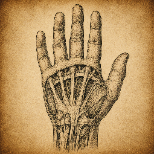

// Claudemonzter · Hands
We've gotskills.
What Claude can do out of the box, the tools I built on top, and the real services I wired them into.

Built by me — custom skillshover to make a connection ↓
Inherent — Claude's basics
Wired up by me — live integrations
Custom
Inherent
Integration
Third-party or planned